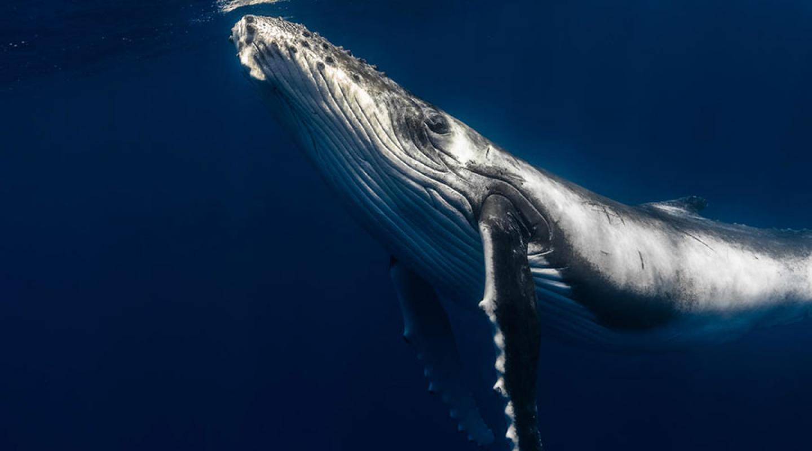
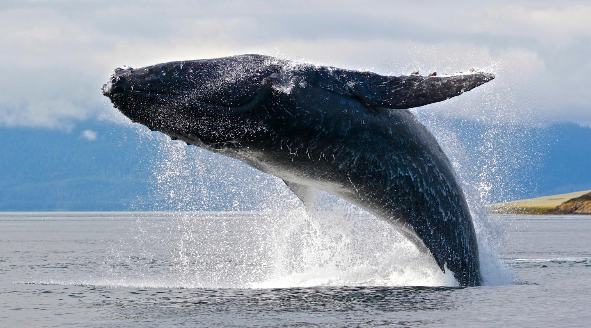
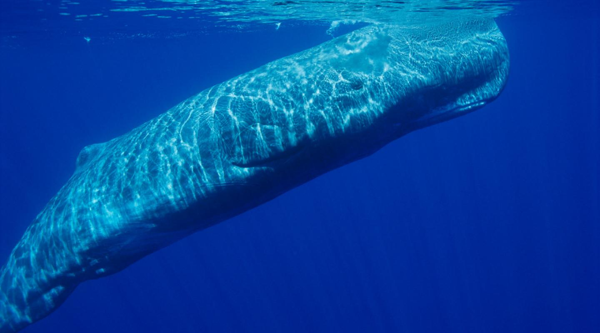

The baleen whales and the toothed whales. Baleen whales have fibrous 'baleen' plates in their mouths instead of teeth which help them filter out huge quantities of krill, plankton, and crustaceans. Toothed whales have teeth which enable them to feed on larger prey such as fish and squid.
Humpback whales in the Southern Hemisphere live off their fat reserves for 5.5-7.5 months each year, as they migrate from their tropical breeding grounds to the Antarctic, to feed on krill.
It’s a mass of tissue which focuses the whales’ calls, vital for communication and echolocation. Like bats, they use this echolocation to "see".
